注意事項
- 成人急性期のマスク式NPPV
- 設定の読み方、導入、観察、日常ケア
- 小児・新生児、在宅、慢性期の導入は対象外
- 開始・増減・離脱は医師の指示と院内手順へ
NPPVとは
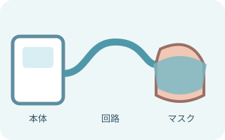
マスクを通して肺を支える
人工呼吸器 → 呼吸回路 → マスク → 気道。
自発呼吸に合わせて陽圧を送り、酸素化や換気、呼吸仕事量を支える。
「非侵襲的」は気管チューブを入れないという意味。人工呼吸であることは変わらない。
使う場面と使えない場面
- COPD増悪に伴う急性または急性増悪の呼吸性アシドーシス
- 急性心原性肺水腫
- 選択された患者の抜管後・術後の呼吸補助
- 気道を守れない、嘔吐・誤嚥リスクが高い
- 大量の分泌物を自力で出せない
- 顔面外傷、熱傷、術後創などでマスクを装着できない
- 呼吸停止、重い意識障害、重い循環不安定
- 緊急挿管が必要
禁忌や慎重適用は機器・マスク、病態、救命方針で異なる。NPPVを行える監視・人員と、すぐ挿管できる体制も確認する。
圧の違いを読む
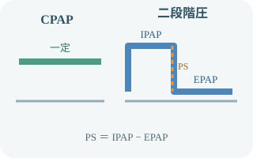
CPAPは一つ、二段階圧は二つ
CPAP：吸気も呼気も同じ持続陽圧。
二段階圧：吸気時IPAPと呼気時EPAPを使う。
PS＝IPAP−EPAP：吸気を押す圧の差。
- IPAP：吸気時の圧。主に換気と呼吸仕事量に関わる
- EPAP：呼気時にも残す圧。肺胞虚脱を防ぎ、酸素化に関わる
- FiO2：目標SpO2へ調整する酸素濃度
- バックアップ呼吸回数：自発呼吸が不足したときの最低回数
- 立ち上がり・トリガ・サイクル：患者との同調に関わる
名称、設定可能項目、リーク補正は機種とモードで異なる。数字だけでなく、実測値・波形・患者の反応を合わせて読む。
マスクと呼気の出口
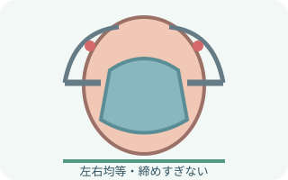
締めすぎず、必要な密着をつくる
サイズを合わせ、左右均等に固定する。
鼻根、頬、口角、顎の圧迫とリークを同時に見る。
何を助けるのか
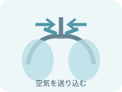
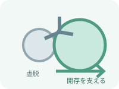
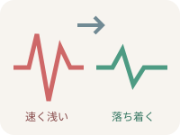
必要物品
- NPPV対応人工呼吸器
- 指定された呼吸回路
- 患者に合うサイズ・形式のマスク
- 指定された呼気ポートまたは排気システム
- ヘッドギア
- 酸素供給源と指定接続部品
- 警報機能付きパルスオキシメータ
- 心電図・血圧モニター
- 必要時、加温加湿器と指定チャンバー・水
- 必要時、皮膚保護材
- 吸引物品
- バッグバルブマスクなど代替換気手段
- 気管挿管・救急物品
回路、マスク、呼気ポート、加湿器は互換性を確認する。排気方式が合わない組み合わせは、CO2再呼吸や換気不良につながる。
導入手順
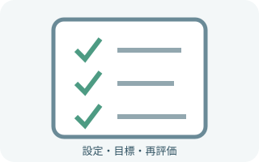
本人・目的・指示を照合モード、各圧、FiO2、目標SpO2、再評価時刻、挿管条件を確認。
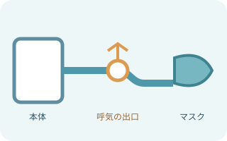
回路と排気方式を組む回路、フィルタ、加湿、呼気ポート、酸素、電源を採用機器の手順で接続。
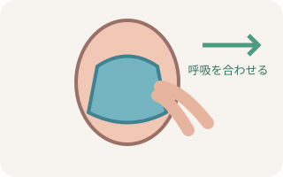
説明してマスクを当てる可能なら手で当てて呼吸を合わせてから固定。苦痛と不安を確認する。
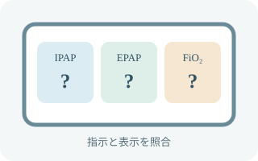
指示された設定へ設定値と実測値を照合。リーク、胸郭運動、一回換気量、同調を確認。
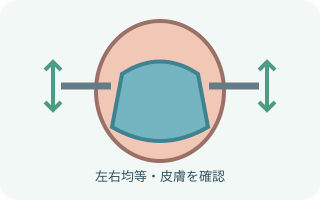
密着と除圧を両立大きなリークを減らす。締め上げず、鼻根・頬・口角の圧迫を除く。
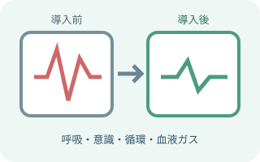
早期に反応を再評価呼吸、意識、循環、SpO2、血液ガス、必要FiO2の変化を時系列で見る。
観察項目
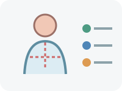
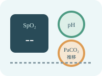
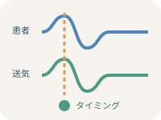
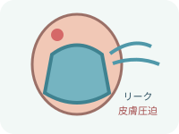
開始前と開始後を比べる。呼吸数、努力呼吸、意識、pHやPaCO2が改善する方向かを見る。
リーク・同調・アラーム
- マスク位置、サイズ、口の開き、回路外れを確認
- 目への吹き上げと皮膚圧迫を確認
- 締め上げる前に位置と形を直す
- 患者の呼吸、気道、分泌物、病態悪化を先に確認
- トリガ、立ち上がり、サイクル、圧、リークを確認
- 設定変更は医師の指示と機器の手順へ
- 消音する前に患者を見る
- 電源、酸素、回路、呼気ポート、マスク、加湿、水滴を確認
- 換気が保てなければ代替換気と応援要請へ
治療失敗を疑う変化
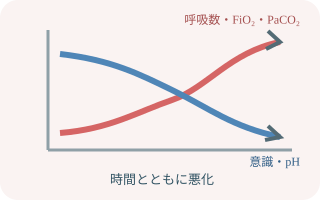
改善しない、または悪化する
呼吸数・努力呼吸・必要FiO2が増え、意識・循環・pH・酸素化が悪化。
マスク調整だけで時間を使わず、早く報告して治療強化へつなぐ。
日常ケア
- 鼻根、頬、口角、顎、耳の皮膚を観察
- 除圧とマスク位置の調整
- 口腔内・鼻腔の乾燥、痰、口渇を確認
- 口腔ケアと排痰を援助
- 必要時、加温加湿と結露を確認
- 体位変換後に回路、マスク、設定を再確認
- 休止中も呼吸状態と治療計画を確認
飲水・食事・内服のために外す場合も、自己判断で中断しない。呼吸状態、誤嚥リスク、休止方法を医師・多職種・院内手順で確認する。
出典
- 日本呼吸器学会「NPPV（非侵襲的陽圧換気療法）ガイドライン 改訂第2版」
- ERS/ATS「Official clinical practice guidelines: noninvasive ventilation for acute respiratory failure」2017
- BTS/ICS「Ventilatory management of acute hypercapnic respiratory failure in adults」2016
- PMDA 医療機器電子添文「V60 ベンチレータ」2024年10月改訂
- PMDA 医療機器電子添文「NPPV フルフェイスマスクシリーズ」
- PMDA 医療機器電子添文「PAPナンバーズマスク」2025年1月作成